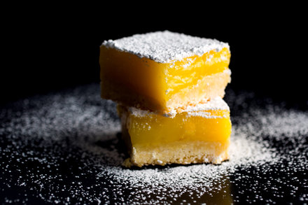

Lemon Bars w/ Olive Oil & Sea Salt

Description
Traditional lemon bars balance the tangy sweetness of lemon curd with a rich shortbread crust.
This recipe adds extra notes of flavor to the mix: the compelling bitterness of good olive oil
and a touch of sea salt sprinkled on top.
Ingredients
For the crust:
- 155 grams all-purpose flour
- 50 grams granulated sugar
- 25 grams confectoners' sugar
- 1 tsp grated lemon zest
- 1/4 tsp sea salt
- 142 grams cold unsalted butter, cut into cubes
For the curd:
- 4 to 6 lemons
- 300 grams sugar
- 2 large eggs plus 3 yolks
- 5 grams cornstarch
- pinch of fine sea salt
- 57 grams butter
- 60 milliliters fruity extra-virgin olive oil
- confectioners' sugar and flaky sea salt, for sprinkling
Steps
- Heat oven to 325 degrees and line a 9-by-9-inch baking pan with enough
parchment to hang over two of the sides (to be used as handles later to lift
the bars out of the pan).
- To make the shortbread base, pulse together the flour, granulated sugar, confectioners’ sugar, lemon zest and salt in a food processor,
or whisk together in a large bowl. Add butter and pulse (or use two knives or your fingers) to cut the butter into the flour until a crumbly dough forms.
Press dough into prepared pan and bake until shortbread is pale golden all over, 30 to 35 minutes.
- While the shortbread is baking, prepare the lemon curd: Grate 1/2 tablespoon zest from lemons and set aside. Squeeze lemons to yield 3/4 cup juice.
- In a small saucepan, whisk together lemon juice, sugar, eggs and yolks, cornstarch and fine sea salt
over medium heat until boiling and thickened, 2 to 5 minutes. Make sure mixture comes to a boil and
stays there for 30 seconds or so; you should see it thicken up before you take it off the heat.
But once it boils do not cook for longer than 1 minute or you risk the curd thinning out again.
Remove from heat and strain into a bowl. Whisk in butter, olive oil and lemon zest.
- When the shortbread is ready, take it out of the oven and carefully pour the lemon curd onto the shortbread base;
return the pan to the oven. Bake until topping is just set, 10 to 15 minutes more.
Allow to cool to room temperature, then refrigerate until cold before cutting into bars.
Sprinkle with confectioners’ sugar and flaky sea salt right before serving.